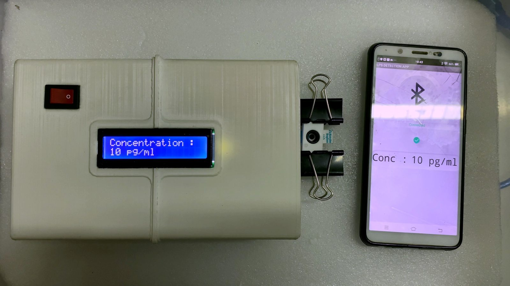

Sepsis demands intervention within hours, and septic shock still carries an in-hospital mortality rate above 40 %.
Yet the standard endotoxin test, the LAL assay, depends on horseshoe-crab blood, costs a great deal, and needs a trained technician in a laboratory. It can miss low concentrations of LPS in blood because of interference, return false positives from shifts in pH or temperature, and false negatives from limited sensitivity. None of it happens where the patient is.
An attogram is a quintillionth of a gram. The sensor's floor sits at ten of them per millilitre, and it stays linear across nine orders of magnitude above that.
Each labelled step is a thousandfold. From a milligram to an attogram is fifteen of them.
Measured, published, peer-reviewed
8.2%
relative standard deviation across five consecutive runs
71%
signal retained after 100 successive measurements

18 × 11.5 × 5.5cm
handheld, 3D-printed analyser
Whole blood · Mayonnaise · Fruit juice
the three real sample types the sensor has been demonstrated in
All figures from Kuttoth, Pathak & Sandhyarani, Langmuir 2025, 41 (26), and its Supporting Information.
Real hardware, running
Not a render. The prototype reading a sample, with the result mirrored to the Android app over Bluetooth.
The sensor has been demonstrated in three real sample types: whole blood, mayonnaise, and fruit juice.
Those results point at two settings. Bedside clinical testing, where a laboratory turnaround is too slow. And screening for bacterial contamination in food.
The LAL assay remains the pharmacopeial standard for compliance testing. This is a screening instrument, not a replacement for it.
About, and how to reach me
I'm Tushar Pathak, one of five inventors on patent IN 429867. I worked across the portable analyser's electronics and firmware, the Android application, sensor preparation, and the validation testing in blood and food samples.
The work was carried out in Dr. N. Sandhyarani's group at NIT Calicut. The patent is owned by the institute, so this page is a record of the work rather than an offer to license it. If you want to talk about where the technology could go, I'd like to hear from you.
Not an email client? Copy the address above. For anything touching licensing or assignment, the National Institute of Technology–Calicut is the patentee and the party to approach.